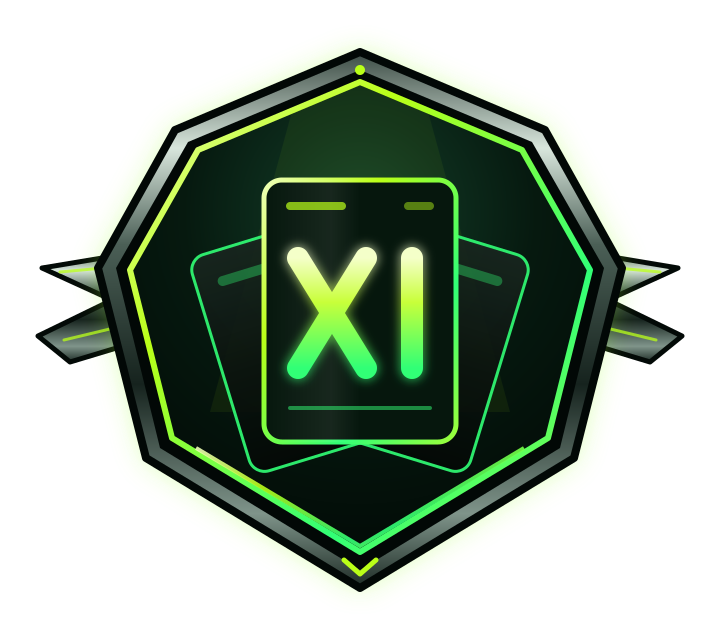

DRAFT XI
Havuzdan 11 oyuncu seç, taktiğini kur, maçı izle.

OYUN MODUNU SEÇ
BOTA KARŞI
MAÇ ODASI
Maç odasına bağlanılıyor…
NASIL OYNANIR?
Yılan sırasıyla (1-2, 2-1 …) 11 oyuncu seçersiniz; her oyuncu yalnızca oynayabildiği bir mevkiye konur. Aynı ülke, kulüp ya da ligden yakın mevkideki oyuncular kimyayı artırır. Sonra planını seç ve maçı izle.